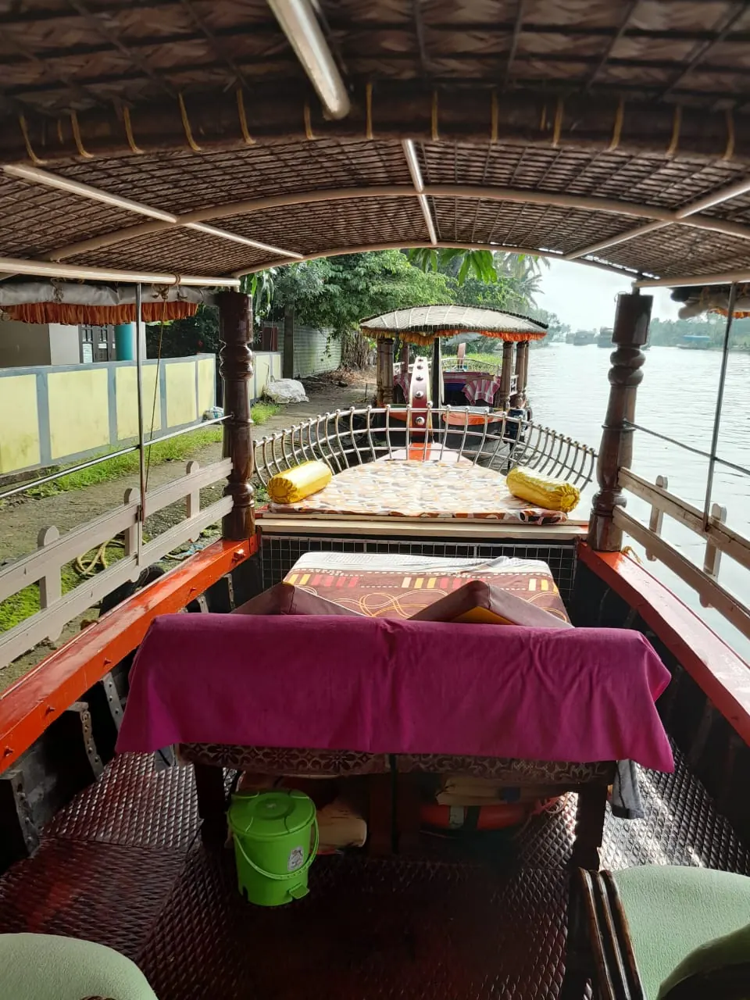

Home / Gallery
LogbookFrom thelogbook
Photos from the boats, the lake and the people who came aboard.

01 · Sunset through the bow of a Kalyani shikara

02 · Kayaks heading into the sunset

03 · Guests relaxing on the front deck

04 · Kayaking under the trees in a narrow canal

05 · Cushioned front deck under the coir canopy

06 · Kayaking under a rainbow

07 · The Kalyani shikara moored at the jetty

08 · Sunset kayaking on Vembanad Lake

09 · Cane chairs under the canopy

10 · Looking out from the shikara deck onto the backwater

11 · Paddling into the village canals

12 · The open front deck, ready for guests

13 · Seating for groups on board

14 · A group of kayakers at sunrise

15 · The shikara deck and canopy